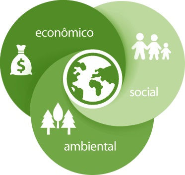

Desenvolvimento Sustentável é necessário?
Acompanhamos no dia-a-dia o quanto o ser humano está destruindo o meio ambiente. O crescimento das cidades, as indústrias e os veículos estão causando transtornos para o ar, o solo e as águas. O desenvolvimento é necessário, porém, o ser humano precisa respeitar o meio ambiente, pois dependemos dele para sobreviver neste planeta. É importante que haja a viabilidade econômica nas ações voltadas para a produção de bens e serviços, porém estes não devem comprometer o futuro das próximas gerações.
Logo, o que é Desenvolvimento Sustentável?
Desenvolvimento sustentável significa obter crescimento econômico necessário, garantindo a preservação do meio ambiente e o desenvolvimento social para o presente e gerações futuras. Portanto, para que ocorra o desenvolvimento sustentável é necessário que haja uma harmonização entre o desenvolvimento econômico, a preservação do meio ambiente, a justiça social (acesso a serviços públicos de qualidade), a qualidade de vida e o uso racional dos recursos da natureza (principalmente a água).